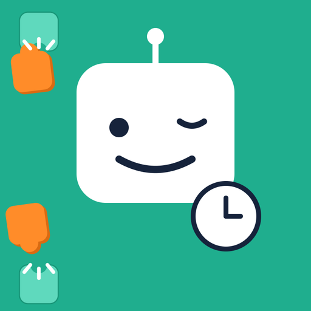

予定を入れるだけ。空いた時間に勉強を自動で配置。
「今日、何を勉強すればいいんだっけ？」を無くすアプリです。 学校・塾・部活などの決まった予定と、やりたい勉強を登録するだけで、 空いている時間に勉強タスクを自動で割り振ります。 計画を立てる時間そのものを、勉強にまわせます。
現在、App Store / Google Play での公開に向けて準備中です。 公開され次第、このページにリンクを掲載します。
ローマ字入力の練習ができる無料ゲームです。どのかなで指が止まっているかを記録して、 拗音・促音・撥音の苦手を見つけます。インストール不要、ブラウザでそのまま遊べます。
ご意見・ご要望・不具合の報告は、以下のメールアドレスまでお願いします。
katteni.gakushu@gmail.com
登録した予定・タスク・学習記録は、すべてお使いの端末の中だけに保存されます。 アカウント登録は不要で、これらのデータが外部のサーバーへ送信されることはありません。 詳しくはプライバシーポリシーをご覧ください。